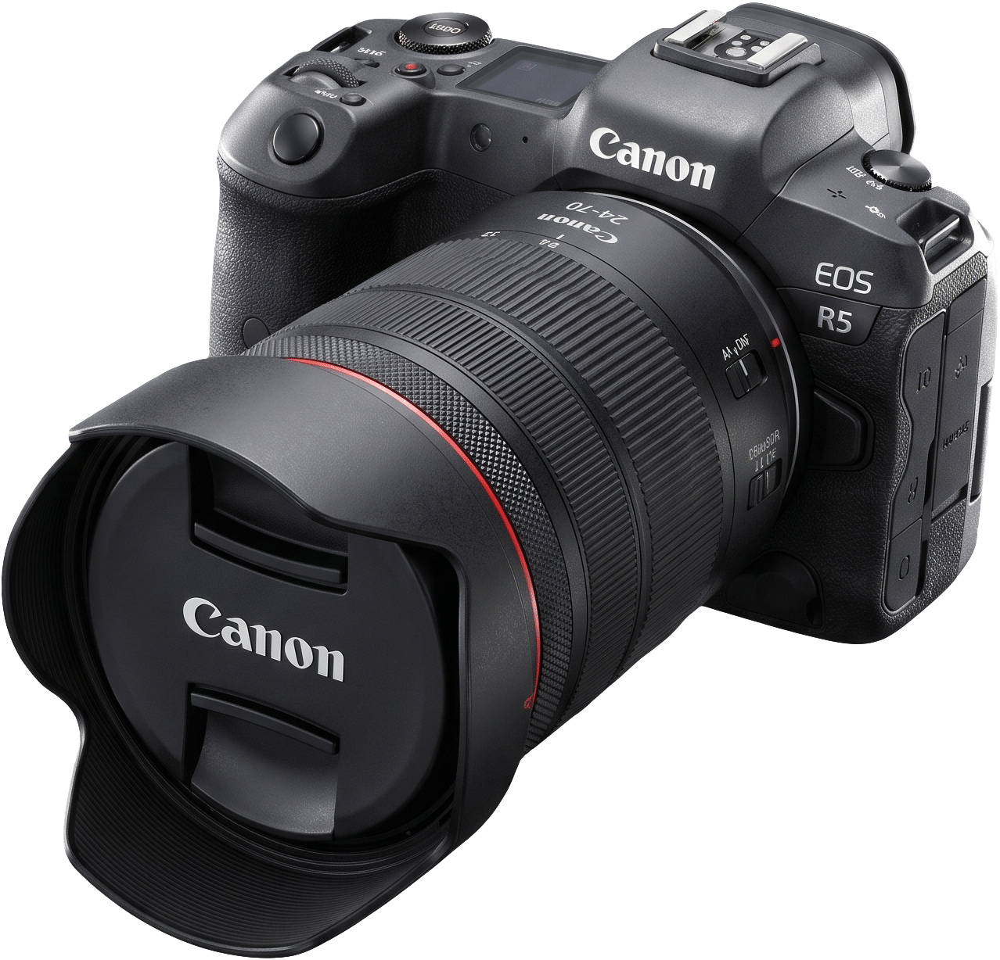
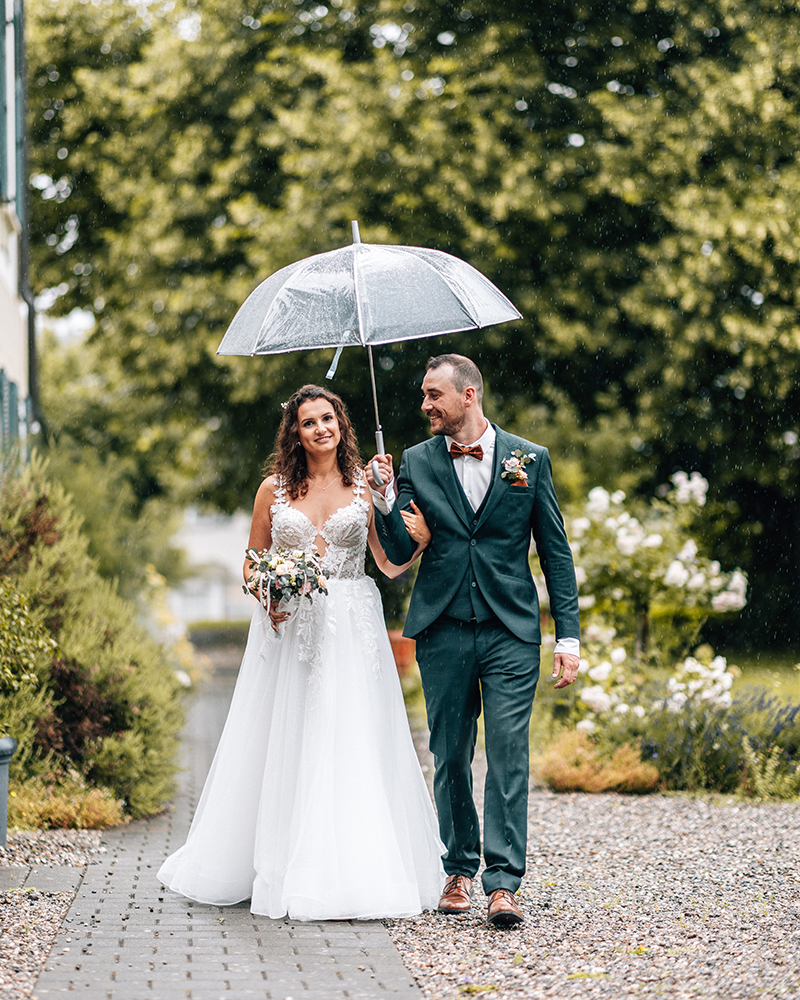
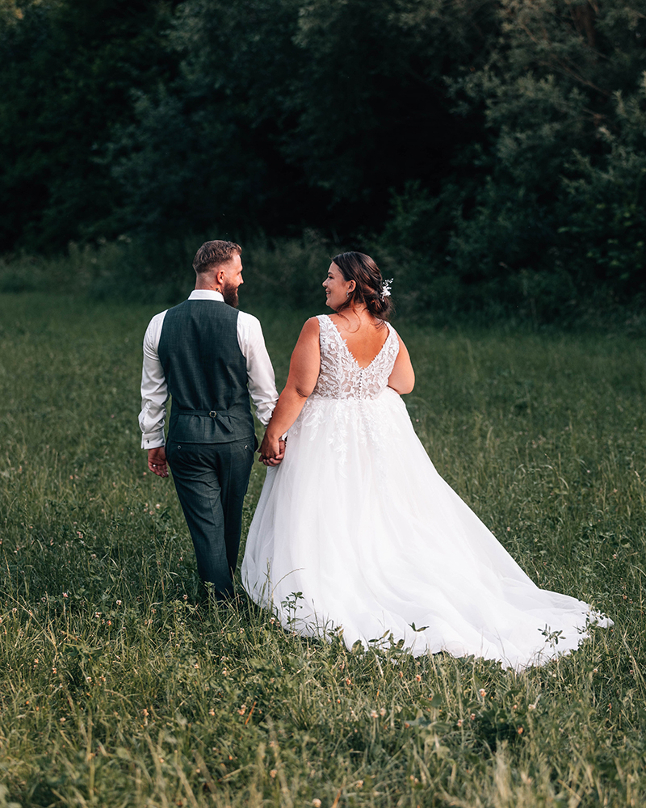
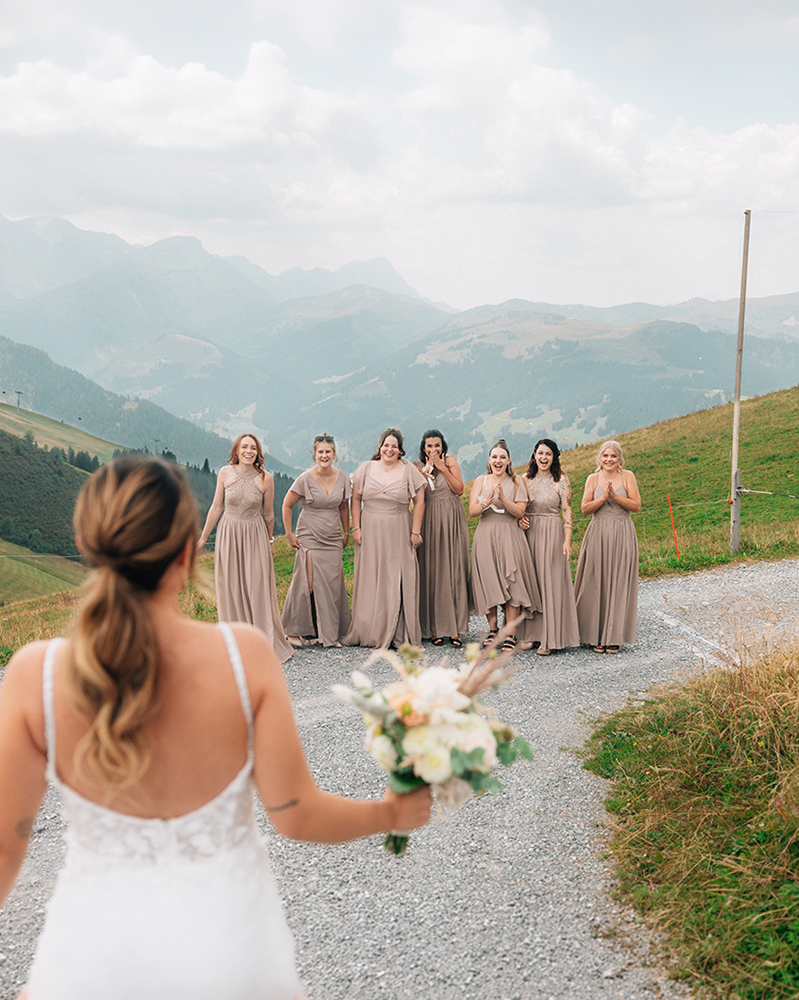

45 MP
Vollformat-Sensor
MEIN LIEBLINGSOBJEKT
Dr Wahnsinn

Für d Nerds
Vollformat-Sensor
Elektronische Serienbilder
Video bis 8K/30p
Schneller, präziser Autofokus
Es paar Biudli
Hochzeiten
Jede Hochzeit ist einzigartig und genau so soll sie in ihrer ganzen Schönheit festgehalten werden. Besondere Momente & emotionale Details eingefangen mit der Canon R5.



Hüenerhut.
Porträts
Ein gutes Porträt zeigt mehr als nur ein Gesicht. Es zeigt Persönlichkeit, Charakter & Emotion. Mit der Canon R5 entstehen Bilder, die authentisch wirken und lange Freude machen.


Im Spotlight.
Reisen
Auf Reisen nimmt man Orte aufmerksam wahr und man hält ihre Eigenheiten fest. Die schönsten Ecken eingefangen mit der Canon R5.


Am entdecke.